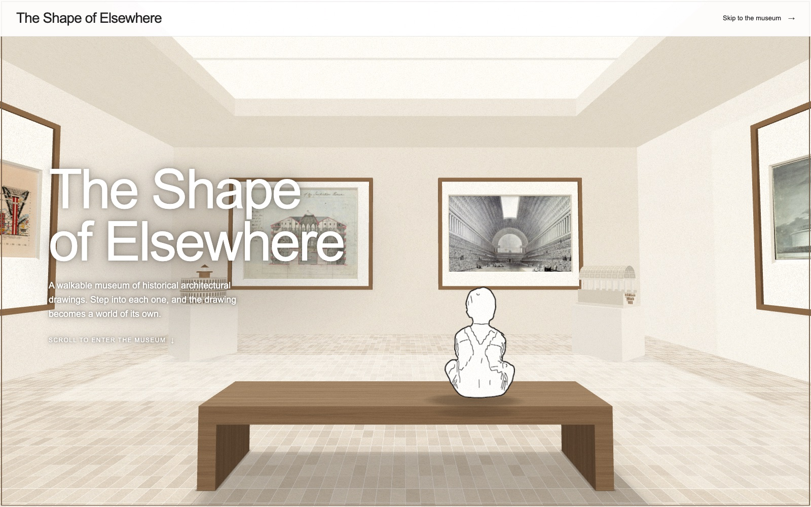
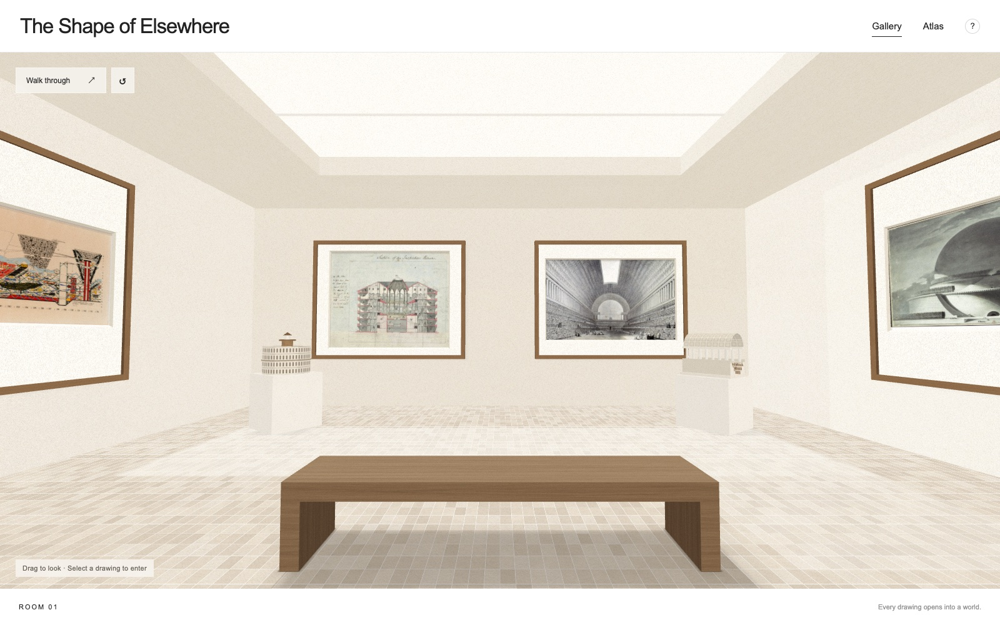
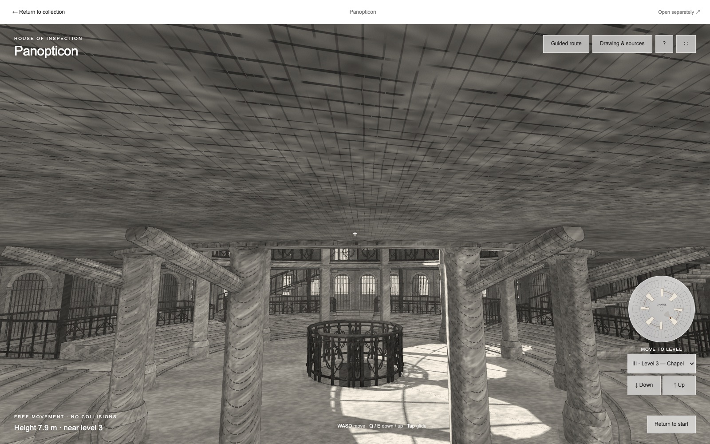
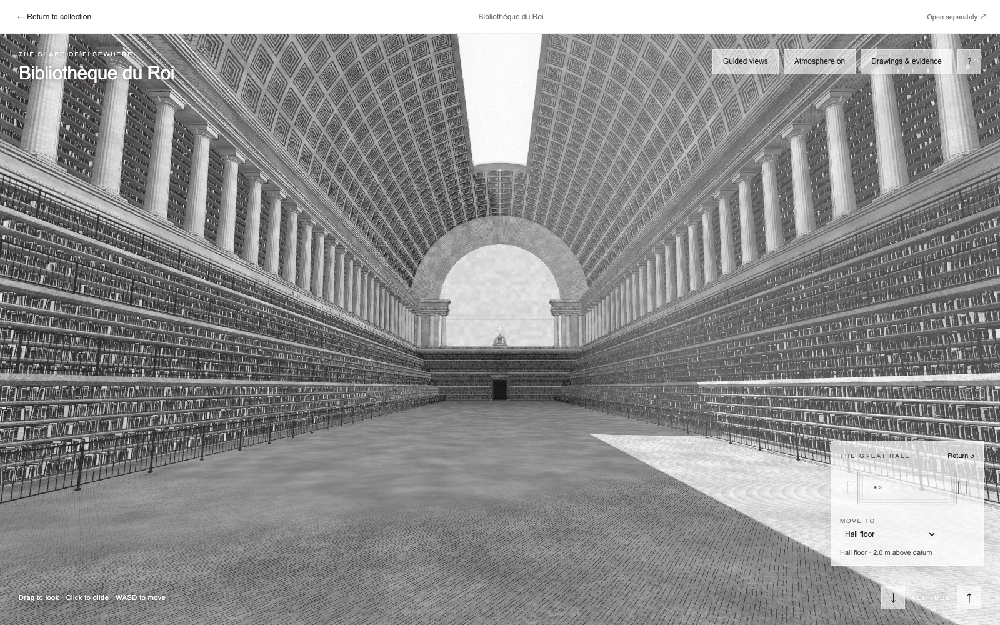
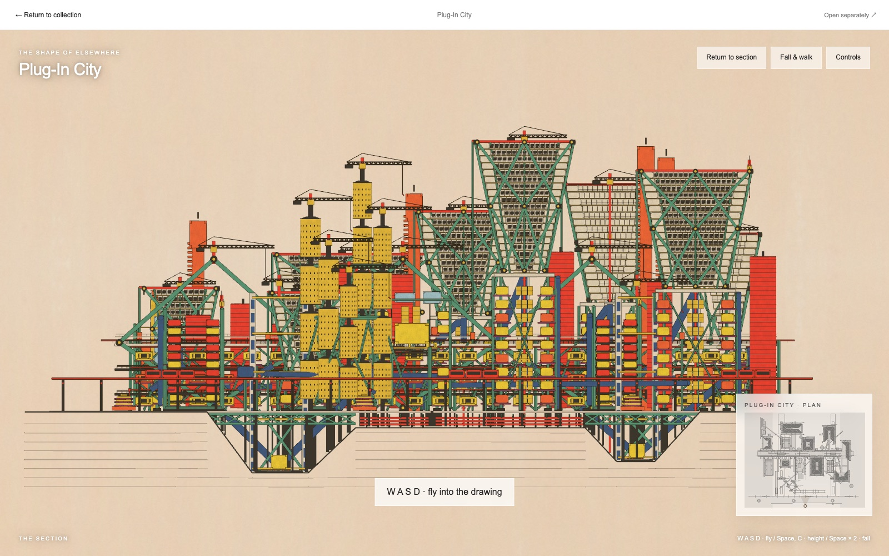
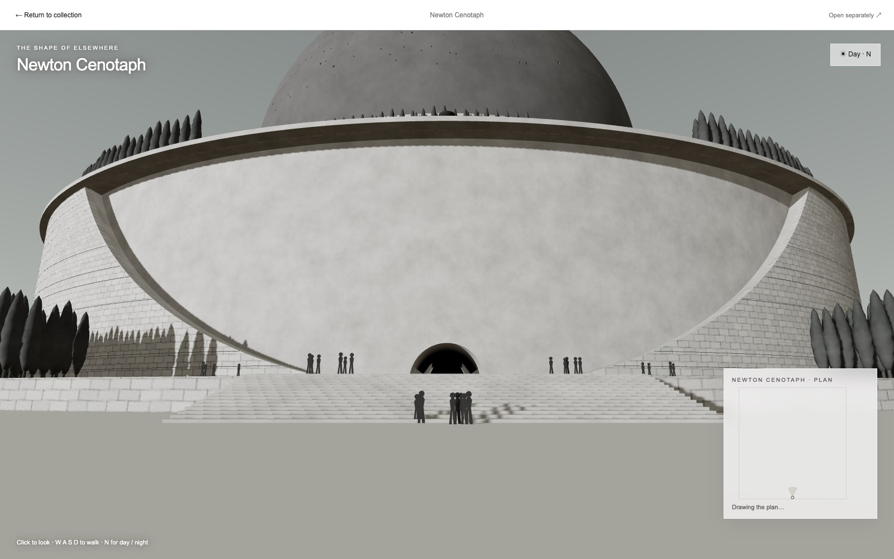

Artistic research · Architectural drawings · Walkable museum
Spatial narratives after historical imaginations.
A walkable museum of historical architectural drawings. Step into each one, and the drawing becomes a world of its own.
Team
Christina Chu · Rainier Sathanielle
Lead
Xun Liu
Year
2026 —

01 · The museum
We spent years with these drawings — in lectures, in textbooks, pinned above our desks. We traced their plans, argued over their ideas, and could explain every one of them. We could never walk into any of them.
So we built them — not as they were, but as we imagined them all those years. Step through a frame. What you’ll find is only a hint of what these other worlds could be like.

02 · The collection

Willey Reveley · House of Inspection · c. 1791The original section opens into a circular world of observation, galleries and cells.

Étienne-Louis Boullée · Unbuilt project · 1780sA monumental room of books, columns and light. Step from the interior perspective into the great hall.

Peter Cook / Archigram · Maximum Pressure Area · 1964A changing city of structures, circulation and replaceable parts. Enter the section, then fly between its platforms and towers.

Étienne-Louis Boullée · Monument to Isaac Newton · 1784A monumental sphere imagined as a tribute to Newton. Descend from the drawing into its terraces and interior, with day and night to explore.
05 · Parc de la Villette — OMA · Competition entry · 1982. A park drawn as a landscape of programs. Step from the colour drawing into an interactive study of its strips, point grids and routes.